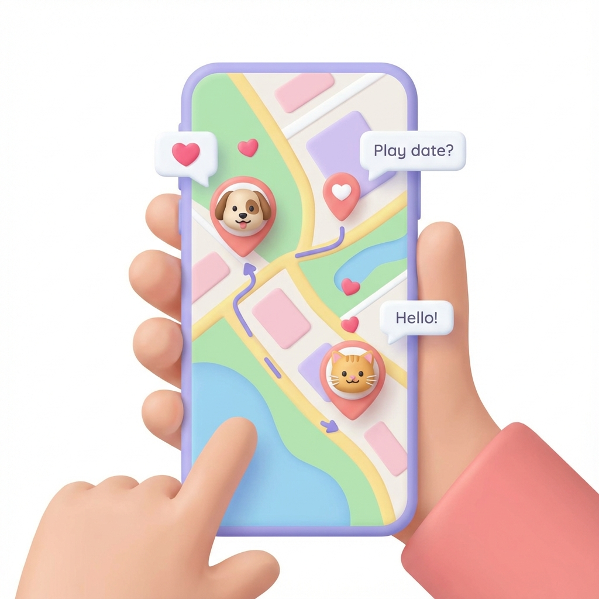

Scopri chi sta passeggiando vicino a te in tempo reale. Unisciti agli amici o fanne di nuovi!

Vedi i marker degli altri utenti sulla mappa. I colori indicano lo stato (in passeggiata, disponibile per giocare, etc.).
Cerchi un compagno di giochi della stessa taglia? Filtra per razza, età o indole del cane.
Vuoi passeggiare in tranquillità? Attiva la modalità fantasma per non apparire sulla mappa, ma continuando a vedere gli eventi.
Invia una richiesta di amicizia e inizia a chattare per organizzare l'incontro al parco.